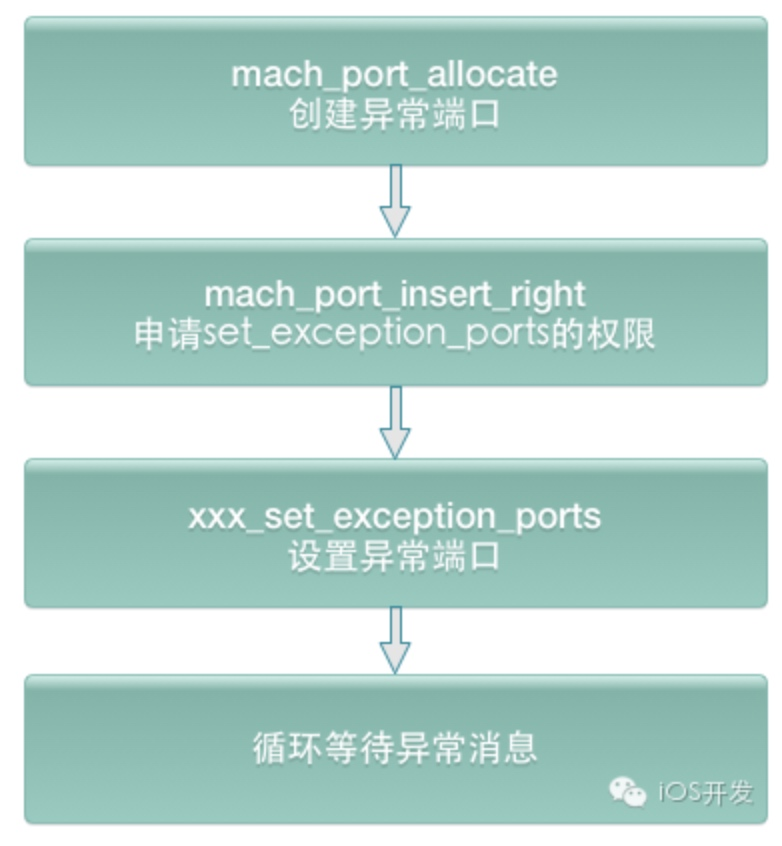

异常

Mach异常
Mach是XUN的内核核心，Mach异常是指最底层的内核级别异常，定义在<mach/exception_types.h>中。每个thread、task、host都有一个异常端口数组，Mach暴露部分API给用户，开发者可以通过Mach API设置thread、task、host的异常端口，来捕获Mach异常，抓取Crash事件
收集Mach异常

Unix信号
所有的Mach异常都在host层被ux_exception转换为相应的unix信号，并通过threadsignal将信号投递到出错的线程。iOS的POSIX API就是通过Mach之上的BSD层实现的
对于信号的说明可以参考iOS异常捕获
收集Unix异常信号
收集signal方法
static void installSignalHandle() {
//previousSignalHandler 用于存储其它对signal的处理
if(previousSignalHandler == NULL)
{
previousSignalHandler = malloc(sizeof(*previousSignalHandler));
}
struct sigaction action = {{0}};
action.sa_flags = SA_SIGINFO | SA_ONSTACK;
#if KSCRASH_HOST_APPLE && defined(__LP64__)
action.sa_flags |= SA_64REGSET;
#endif
sigemptyset(&action.sa_mask);
action.sa_sigaction = &handleSignal;
// 设置对信号 SIGSEGV 的处理action
sigaction(SIGSEGV, &action, previousSignalHandler);
}
void handleSignal(int sigNum, siginfo_t* signalInfo, void* userContext) {
//对捕获的异常进行处理。比如堆栈、符号化等
//
uninstallSignalHandler();
//重启信号 以让其他handle进行处理
raise(sigNum);
}
static void uninstallSignalHandler(void)
{
//将信号处理action设置为之前的动作
sigaction(SIGSEGV, previousSignalHandler, NULL);
}
NSException
对于应用级别的异常，是由NSException导致程序crash的。是由iOS库或者第三方库的Runtime时出错而抛出的异常
//注册异常处理函数
NSSetUncaughtExceptionHandler(&uncaught_exception_handler);
//获取之前的异常处理步骤
lastExceptionHandle = NSGetUncaughtExceptionHandler();
//异常处理函数
static void uncaught_exception_handler (NSException *exception) {
//对捕获的异常进行处理。比如堆栈、符号化等
//将异常信息传递给之前的处理handle
lastExceptionHandle(exception);
}
总结
iOS自带的Apple Crash Report记录了设备的Crash日志，通常会包含两个元素：Mach 异常 和 Unix 信号。
Exception Type: EXC_BAD_ACCESS (SIGSEGV)
Exception Subtype: KERN_INVALID_ADDRESS at 0x041a6f3
EXC_BAD_ACCESS (SIGSEGV)表示的意思是：Mach 层的EXC_BAD_ACCESS异常，在 host 层被转换成SIGSEGV信号投递到出错的线程
当错误发生时候，先在最底层产生Mach异常；Mach异常在host层被转换为相应的Unix Signal; 在OC层如果有对应的NSException（OC异常），就转换成OC异常，OC异常可以在OC层得到处理；如果OC异常一直得不到处理，程序会强行发送SIGABRT信号中断程序。在OC层如果没有对应的NSException，就只能让Unix标准的signal机制来处理了
捕获Mach和Unix信号都可以捕获到crash信号，这两种方式优先选择Mach异常:
因为Mach异常优先于Unix信号处理发生，如果Mach异常的handle让程序exit了，那么Unix信号就到不了这个进程了